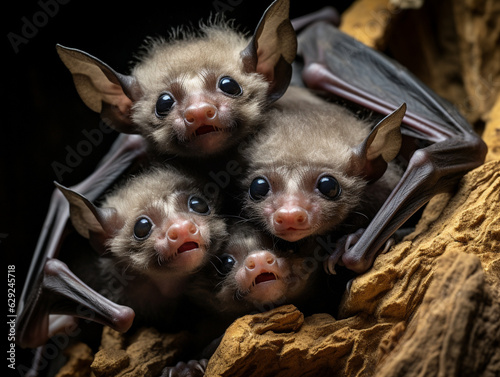

REPRODUCCIÓN
- El ciclo de vida de los murciélagos suele durar de 7 a 10 años en estado silvestre; aunque algunos pueden llegar a los 33 años.
- La madurez sexual es variable, en algunas especies ocurre desde el primer año de vida y en otras comienza hasta los 5 años. Pero en términos generales, una gran proporción de individuos de varias especies madura entre su primer y segundo año.
- Muchos murciélagos solo tienen un embarazo al año, pero ciertas especies pueden tener 2.
- La gestación de los murciélagos dura entre 40 días y 6-7 meses, según sea la especie, no obstante puede ser de hasta 9-10 meses.
- En la mayoría de los casos, las hembras solo tienen 1 cría y rara vez 2, que nacen de tal modo que la madre está colocada boca abajo y tienen que sujetarlos con sus alas para evitar que se caigan.
- A las 3 semanas de edad gran parte de las crías de murciélago son capaces de volar.
